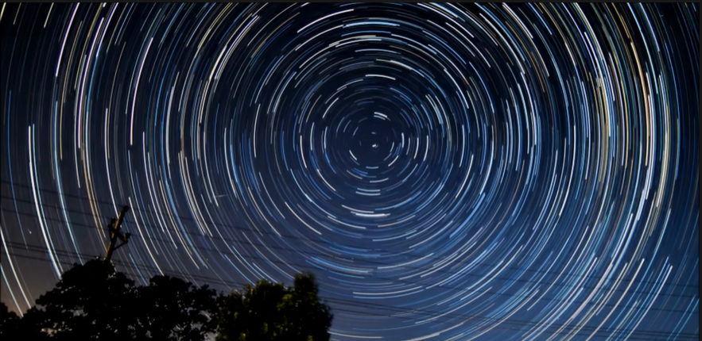
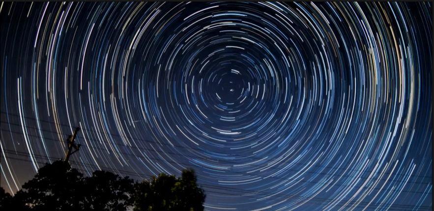

My inspiration comes from Vincent Van Gogh's artwork and the time-lapse photography on star trials.
Therefore, this project uses fractured lines and swirling particles.


Starry Night
About the Designer
This project is an interactive graphic that allows viewers to create a Van Gogh style starry night.
The project is made via p5.js.
Link to p5 sketchMy inspiration comes from Vincent Van Gogh's artwork and the time-lapse photography on star trials.
Therefore, this project uses fractured lines and swirling particles.
